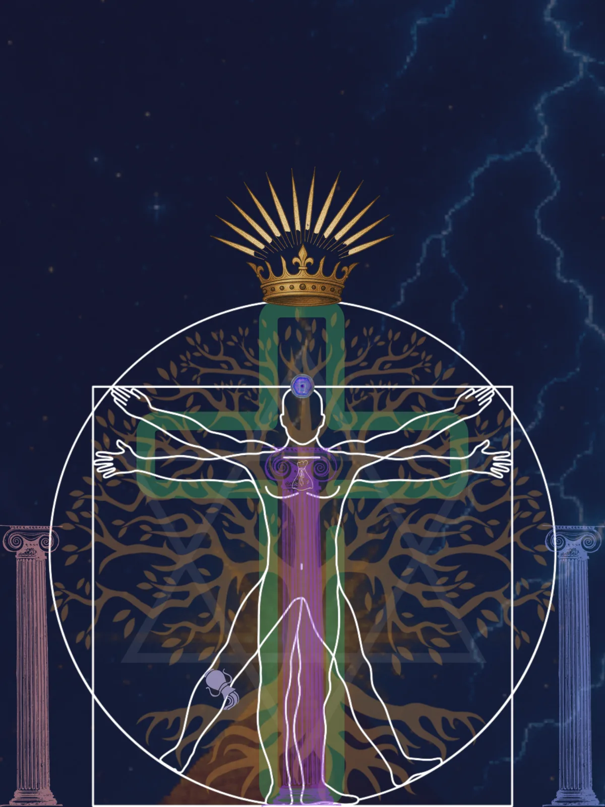
“A MESSAGE OF PURPOSE AND HEALING FROM THE STORY ‘WRITTEN IN LIGHT’ AS REFLECTED FROM THE STARS ABOVE...”
THE SECRET OF THE AGES:
“WATERING OF THE TREE OF LIFE”
RECONCILIATION OF ANCIENT WISDOM AND MODERN SCIENCE: PROCESSES AND METHODS OF CONSCIOUS directION OF innervation FOR THE ACTIVATION OF THE COMPONENTS OF brain AND body to accelerate healing, increase awareness AND UNLOCK ALL ASPECTS OF SELF.
PRESENTED BY:
CHRISTOPHER NAIRB
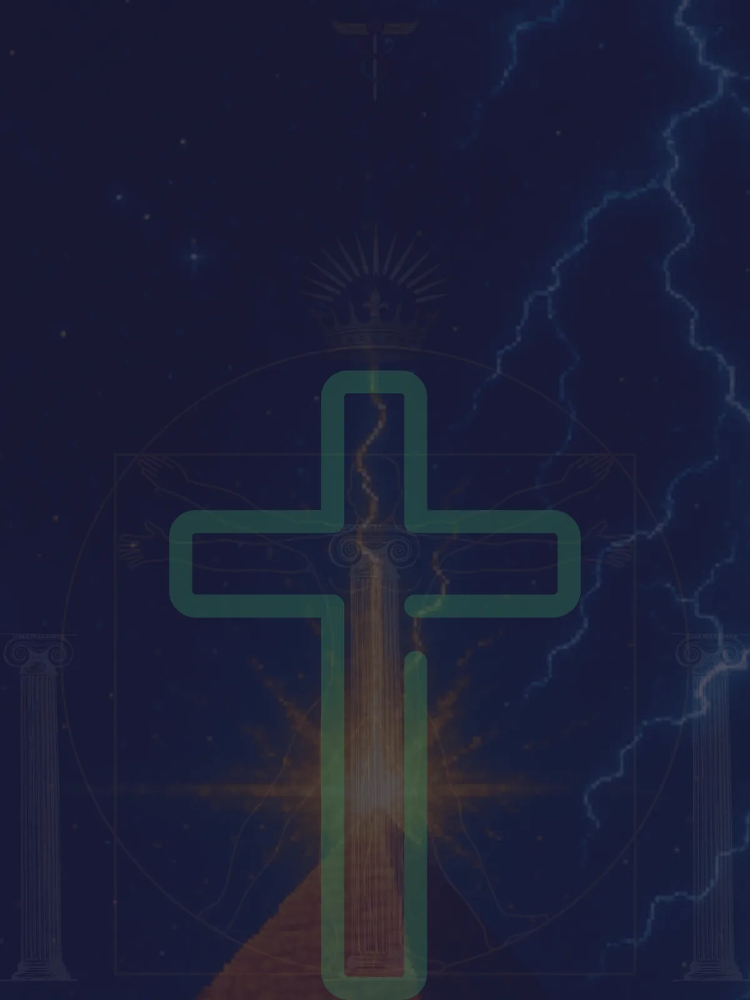
WHEN JESUS TRIED TO TEACH ALL IS REFLECTED
Matthew 7:1-2
1 Do not judge, or you too will be judged.
2 For in the same way you judge others, you will be judged, and with the measure you use, it will be measured to you.
THE WAY TO LIVE free of fear AND INSECURITY:
Though the word “judge” certainly evokes the idea of judgement and thus in a biblical context “judgement day” In looking past this oversight and understanding the words of Jesus in Matthew FOR WHAT THEY ARE, as tools and ways to use the SUBCONSCIOUS mind, AND WHAT HE TRIED TO EXPRESS we MAY UNDERSTAND AND GROW FROM WHAT JESUS WAS TRYING TO CONVEY.
LET IT BE MADE CLEAR THAT what Jesus meant was that if you judge others then you BELIEVE others will judge you and thus YOUR INSECURITY CORRESPONDS TO HOW MUCH YOU JUDGE OTHERS.
LET IT THEN BE SAID THAT WHAT WAS MEANT IS THAT THE WORLD IS A MIRROR.
if you do not judge others and allow them to exist as the person they are then you yourself will assume that others are doing the same. THIS WILL HELP YOU feel secure and confident in ALL THAT YOU ARE.
If you sort of judge people a little then you’ll be a little insecure about some THINGS.
If you judge a lot of people on a lot of things then you yourself will feel as if others are worried about you and your actions and thEN YOUR ACT MAY BECOME ALIGNED WITH THAT WHICH YOU THINK OTHERS WANT FROM YOU AND NOT WHAT YOU KNOW IN YOUR HEART YOU SHOULD DO. THIS IS INTEGRITY.
It is more important for you to do what you KNOW you are to do than to do what you THINK others WANT or EXPECT from you.
people are not THINKING about you and your actions and judging or worrying about you, and if for whatever reason they are, it is their loss of time and energy and does nothing but prevent them on focusing energy and thought to where it ought to be.
People have their own lives and are more focused on living that than what you are up to.
To live your life within the CONSTRAINTS OF THE BOX of fear AND INSECURITY YOU’VE BUILT THROUGH YOUR OWN JUDGEMENT OF OTHERS IS TO NOT LIVE AT ALL.
SO TAKE WHAT IS YOURS AND KEEP IT INTO YOU AND DO NOT CAST YOUR PEARL BEFORE SWINE, THAT BEING YOU, AS A HIGHER MAN, SHOULD IGNORE THE ATTEMPTS TO WASTE AND DESTROY TIME AND ENERGY ON THAT WHICH CONCERNS A LOWER MAN. FOR HIS CONCERNS, REAL TO HIM, ARE USUALLY NOT REAL AT ALL.
This idea extends beyond just the freedom of others worries about you but applies in all manners of life; the world is a mirror and the outside is no more than a product of the inside.
INTERPRETATIONS::
“Blessed are the poor in spirit, for theirs is the kingdom of heaven. “
Blessed are the lost souls FOR IT IS WHEN LOST THAT THEN THEY MAY FIND.
“Blessed are those who mourn, for they will be comforted.”
Blessed are the lonely because WHENEVER THEY MAY ACCEPT IT THEY ARE in the ever loving Hand of God.
“Blessed are the meek for they shall inherit the earth.”
Blessed are those who wield strength of God and choose to bring Heaven to Earth and not Hell. These men are the coming kings.
“Blessed are those who hunger and thirst for righteousness, for they will be filled. “
Blessed are the ones who seek to know GOD for GOD will show HIMself to them.
“Blessed are the pure in heart for they will see God.”
Though some do not know God, they act in line with God, and will thus come to understand God.
“Blessed are peacemakers for they will be called the children of God.”
There is no reason for war amongst men as all men arE ALL SIBLINGS..
“ Blessed are those who are persecuted because of RIGHTEOUSNESS, for theirs is the Kingdom of Heaven,”
No matter the face of the adversity you must always put god first. For even if you end up in a concentration camp FOR EXPRESSING your faith THAT SAME FAITH alone will give you the strength to endurE. IT IS JUST PART OF THE PLAN. IT IS MORE IMPORTANT TO PUT THE LAW BEFORE MATERIAL DESIRES.
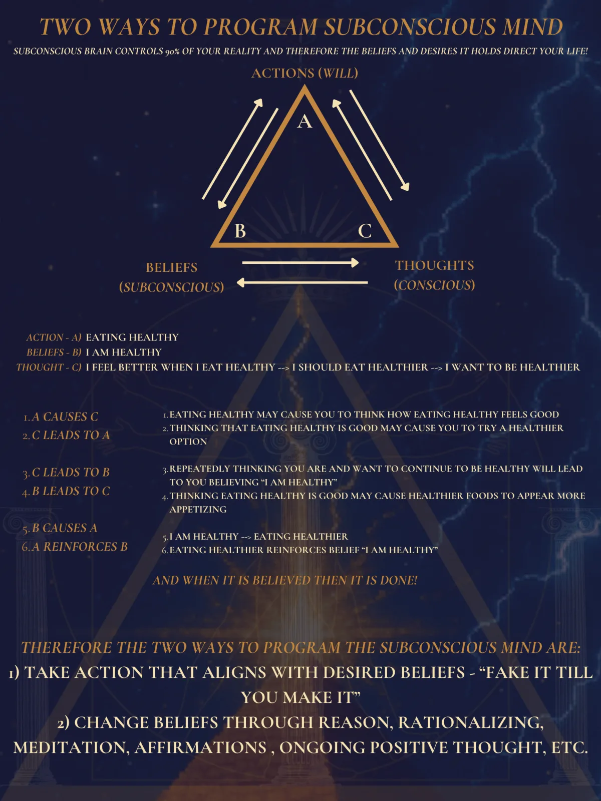
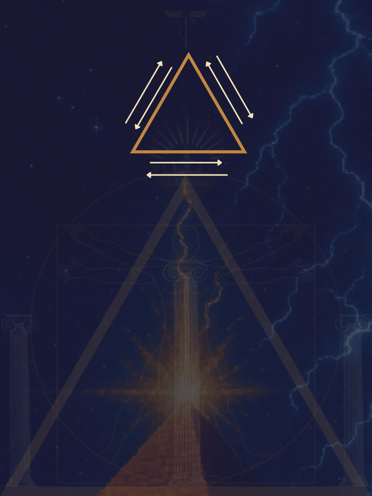
two ways to program subconscious mind
Subconscious brain controls 90% of your reality and therefore the beliefs and desires it holds direct your life!
Actions (WILL)
A
B
Beliefs
(subconscious)
action - A)
Beliefs - B)
thought - C)
C
Thoughts
(conscious)
Eating Healthy
I am healthy
I feel better when I eat healthy --> I should eat healthier --> I want to be healthier
A causes C
C leads to A
C leads to B
B leads to C
B causes A
A reinforces B
eating healthy may cause you to think how eating healthy feels good
Thinking that eating healthy is good may cause you to try a healthier option
repeatedly thinking you are and want to continue to be healthy will lead to you believing “I am healthy”
Thinking eating healthy is good may cause healthier foods to appear more appetizing
I am healthy --> eating healthier
Eating HEALTHIER reinforces belief “I am healthy”
AND WHEN IT IS BELIEVED THEN IT IS DONE!
therefore the two ways to program the SUBCONSCIOUS mind ARE:
1) take action that aligns with desired beliefs - “fake it till you make it”
2) change beliefs through reason, rationalizing, MEDITATION, affirmations , ONGOING positive thought, etc.
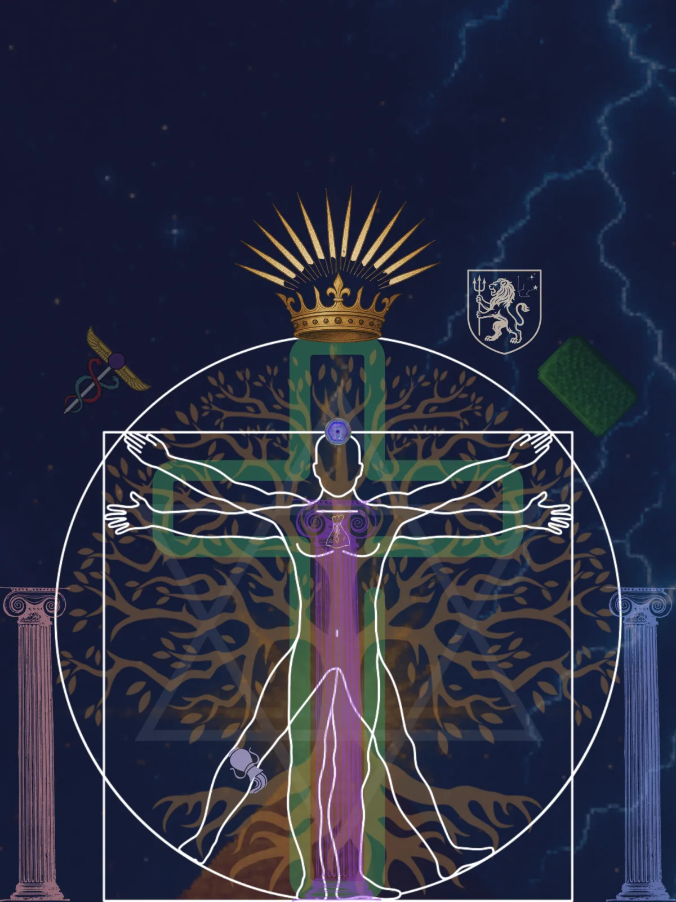
A MESSAGE OF PURPOSE AND HEALING
FROM A TEACHER OF THE SCHOOL MOST DO NOT REALIZE ALL ARE ENROLLED
- LET ALONE THERE BEING TESTS OR A GRADUATION!
AN EXPRESSION OF THE FORM OF THE ORDER OF THE CHILDREN OF LIGHT!
A DISCIPLE OF THE ANCIENTS!
BY WAY OF THE IBIS GLORY OF CHEM!
BY WAY OF THE ONE OF THE ORACLES WHO’S MEASURING ROD HATH SLAIN!
AND BY WAY OF THE PHILOSOPHER KING WHO’S PEARLS WERE HID ‘TIL THAT OF THEIR TIME!
BY WAY OF THE PATH OF THE LIGHT FROM THE STAR TO BE DESCRIBED!
WHO WILL HEREBY SHARE HIS GIFTS TO THE WORLD!
BRINGING TO LIGHT HIS FIRST WORK OF ART!
“FROM CHAPTERS OF THE ‘STORY WRITTEN IN LIGHT’ AS REFLECTED FROM THE STARS ABOVE...“
HEREBY PRESENTING:
THE SECRET OF THE AGES:
“WATERING OF THE TREE OF LIFE”
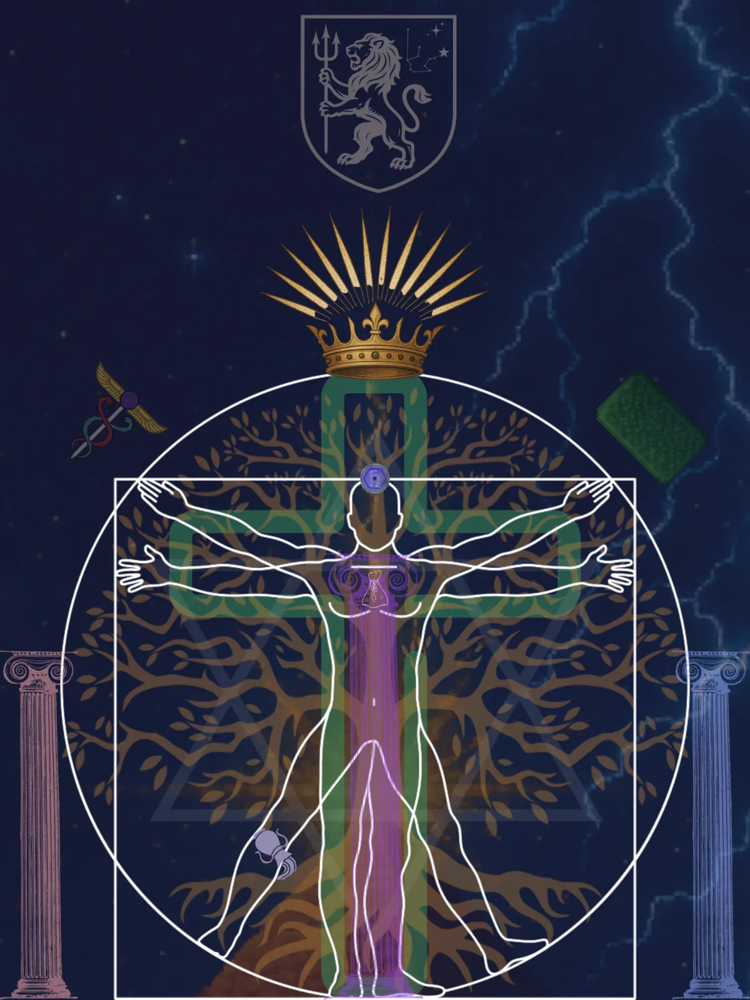
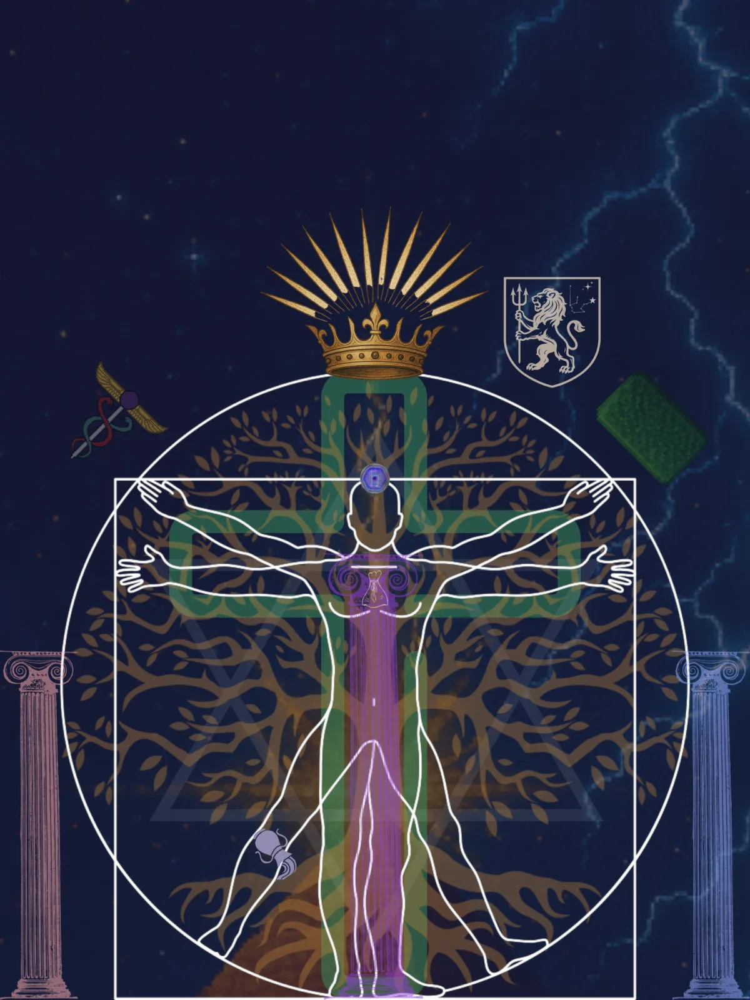
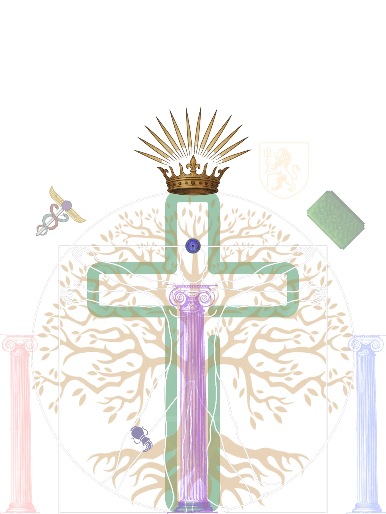

MAN AND HIS SWORD...
MAN HAS FORGED THE SWORD SO LONG HE HAS FORGOTTEN HE EVER FOUND BENEFIT IN THE HARMONY BROUGHT ALONG WITH THE PROTECTION OF HIS SHIELD
HE KNOWS IF HE CONTINUES IN HIS WAYS HE WILL BE SLAIN YET KNOWS FOR EVEN IF YESTERDAY HAD HE PUT DOWN HIS SWORD JOINING HIS ENEMY IN LOVING-COMPASSION FOR HE WOULD IN THE END STILL BE SLAIN
NOW THE RACE REALIZES IF THEY DO NOT RESOLVE THEIR PROBLEM THEN THEY ALL BE SLAIN
LUCKY FOR MAN THERE IS ALWAYS SALVATION IN RECOLLECTION
LOOKING THROUGH THE MEMORY GLASS OF HIS HEART BACK TO A TIME WHERE HE FOUND HIMSELF GRANTED THE GIFT OF HARMONY
A GIFT GRANTED TO HIM BY THE PROTECTION OF HIS SHIELD CHARGED WITH THE REFLECTION OF NIGHT AND THE FORGIVENESS REQUIRED TO WIELD HIS SWORD CARRYING THE SUN AND ALL OF ITS MIGHT
IN LOVING DEDICATION TO....
This book is made first and foremost in the honor of and in devotion to God, OUR FATHER ABOVE, AND In grateful expectation of the day when all of HIS Children may come to be understood by and understand Him in all of His glory and in all of his greatness.
The book is made secondly in honor of and devotion to the fire God hath left ever aflame in Man’s heart. THE FIRE WE FEEL BURNING THAT MAN CALLS INTUITION WHEN WE ARE REMINDED OF WHAT IS MEANT FOR US. The fire that fuels our burning desire to help for ourself and for our fellow man to eternalize and understand THAT WHICH IS ETERNAL.
And third this book is made in honor of THOSE WHO in sacrifice to their fellow man DO THE WORK THAT MUST continuously BE done AND SERVE THEIR ROLE IN ILLUMINATING the path for THE brothers after THEM ENSURING THE WORK OF THE BROTHER BEFORE THEM NOT BE IN VAIN FOR THEY ARE THE STARS WHO GUIDE US into the morning, THROUGH THE EBBS AND FLOWS OF ALL THINGS, to what the lower man calls death and the higher man new life, to the changing of the season, the rising of our new Sun, the dawn of the age, the birth of our new Son and to the MORNING staRS WHO WILL GUIDE HIM ALONG HIS ASCENT, for their gifts will remain a blessing for all Man until the day each HAS HEARD THE NAME IN THE WHISPER AND RETURNS TO DUST.
CREDITS...
THE 7TH LINE OF THE 7TH CHAPTER OF THE ONE WHO’S NAME IS OF 7
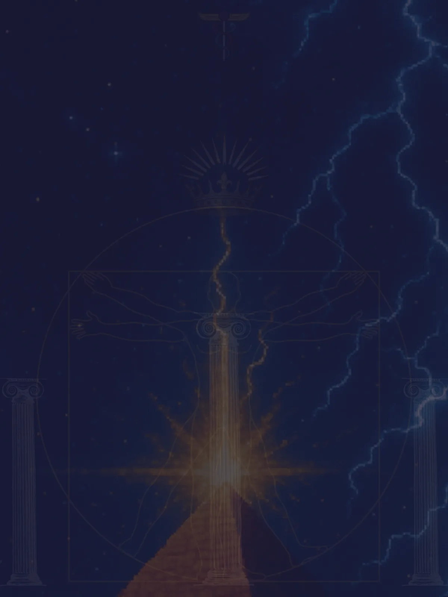
A POEM FROM THE ORDER OF THE CHILDREN OF THE LIGHT...
AT THE TIME THAT IT BE
THE TIME THAT IT IS
A MEETING OF ME AND YOU
IT MAY REALLY BE SAID
IT MAY REALLY BE TRUE
IT REALLY BE JUST US TWO
AND YET IT BE TWO
IF MET IN THE GLORY
THEN LET IT BE SAID
AS IT IS THE TRUTH
THOUGH EVEN JUST TWO
THE POWERS THAT BE
ARE ADDED TO THEE
AND NOW YOU ARE GIVEN THE GIFT
THE GIFT YOU ARE GIVEN
THE GIFT OF TRUE VISION
NOW YOU MAY FINALLY SEE.
NOW WITH THE NEW GIFT
THE GIFT OF TRUE VISION
NOW YOU MAY MAKE
RIGHTEOUS DECISION
FOR YOU DO NOT LOOK
NOR DO YOU SEE
NOT WITH THE TWO
BUT NOW WITH THE ONE
WITH THE ONE YOU DO SEE
AND THAT WHICH IS SEEN
SEEN BY THE ONE
IT BECOMES WRITTEN
WRITTEN AND DONE
THEN FROM THE DUST
YOU AS A VIRGIN
YOU JUST GAVE BIRTH
GAVE BIRTH TO A SUN
FOR NOW YOU ARE ONE
YET LET IT BE KNOWN
THIS NOT BE FOR FUN
NOW LET IT BE HEARD
THE WORK HAS ONLY BEGUN
NOW USE THIS NEW GIFT
FOR ONLY WITH IT
WILL YOU FIND THE PEACE
AND WITH THIS NEW PEACE
THE PEACE THAT YOU NEED
THE PEACE SO YOU MAY
MAY FIND WHAT YOU SEEK
AND WHAT YOU MAY SEEK
WILL GIVE YOU THE PIECE
THE PIECE THAT YOU NEED
THE PIECE THAT YOU SOUGHT
TO SEE THAT IT BE
THAT IT BE COMPLETE
COMPLETE BE THE PUZZLE
THE PUZZLE THAT BE
THE PUZZLE THAT ONE DAY
ALL SOULS SHALL SEE.
UNTIL ALL SOULS SHALL SEE
ALL SEE WITH THE SIGHT
THE SIGHT OF THE ONE
THEN LET IT BE SAID
THE WORK BE NOT DONE
THE WORK BE NOT DONE
NOT TILL THE DAY
THE DAY THAT WE ALL
WE ALL BECOME ONE.
NOW TILL THE DAY
THE ONE WE MAY SAY
THAT IT WAS THE DAY
THE DAY THAT FOREVER CAME TRUE
THAT BE THE DAY
THE DAY OF THE WORK
THE WORK HAS BEEN SAID
THE DAY OF THE WORK
THE WORK HAS BEEN DONE
THEN WE MAY MAKE
MAKE OUR WAY BACK
MAKE OUR WAY BACK TO THE SUN
ONCE WE ARE BACK
BACK IN THE DUST
BACK IN THE DUST WE ARE FROM
NOW IT BE SAID
NOW IT BE TRUE
WE ARE BACK PART OF THE ONE.
A POEM FROM THE TRUE CHILDREN OF THE LIGHT...
AT THE TIME THAT IT BE
THE TIME THAT IT IS
A MEETING OF ME AND YOU
IT MAY REALLY BE SAID
IT MAY REALLY BE TRUE
IT REALLY BE JUST US TWO
AND YET IT BE TWO
IF MET IN THE GLORY
THEN LET IT BE SAID
AS IT IS THE TRUTH
THOUGH EVEN JUST TWO
THE POWERS THAT BE
ARE ADDED TO THEE
AND NOW YOU ARE GIVEN THE GIFT
THE GIFT YOU ARE GIVEN
THE GIFT OF TRUE VISION
NOW YOU MAY FINALLY SEE.
NOW WITH THE NEW GIFT
THE GIFT OF TRUE VISION
NOW YOU MAY MAKE
RIGHTEOUS DECISION
FOR YOU DO NOT LOOK
NOR DO YOU SEE
NOT WITH THE TWO
BUT NOW WITH THE ONE
WITH THE ONE YOU DO SEE
AND THAT WHICH IS SEEN
SEEN BY THE ONE
IT BECOMES WRITTEN
WRITTEN AND DONE
THEN FROM THE DUST
YOU AS A VIRGIN
YOU JUST GAVE BIRTH
GAVE BIRTH TO A SUN
FOR NOW YOU ARE ONE
YET LET IT BE KNOWN
THIS NOT BE FOR FUN
NOW LET IT BE HEARD
THE WORK JUST BEGUN.
NOW USE THIS NEW GIFT
FOR ONLY WITH IT
WILL YOU FIND THE PEACE
AND WITH THIS NEW PEACE
THE PEACE THAT YOU NEED
THE PEACE SO YOU MAY
MAY FIND WHAT YOU SEEK
AND WHAT YOU MAY SEEK
WILL GIVE YOU THE PIECE
THE PIECE THAT YOU NEED
THE PIECE THAT YOU SOUGHT
TO SEE THAT IT BE
THAT IT BE COMPLETE
COMPLETE BE THE PUZZLE
THE PUZZLE THAT BE
THE PUZZLE THAT ONE DAY
ALL SOULS SHALL SEE.
UNTIL ALL SEE
ALL SEE WITH THE SIGHT
THE SIGHT OF THE ONE
THEN LET IT BE SAID
THE WORK BE NOT DONE
THE WORK BE NOT DONE
NOT TILL THE DAY
THE DAY THAT WE ALL
WE ALL BECOME ONE.
NOW TILL THE DAY
THE ONE WE MAY SAY
THAT IT WAS THE DAY
FOREVER CAME TRUE
THAT BE THE DAY
THE DAY OF THE WORK
THE WORK HAS BEEN SAID
THE DAY OF THE WORK
THE WORK HAS BEEN DONE
THEN WE MAY MAKE
MAKE OUR WAY BACK
MAKE OUR WAY BACK TO THE SUN
ONCE WE ARE BACK
BACK IN THE DUST
BACK IN THE DUST WE ARE FROM
NOW IT BE SAID
NOW IT BE TRUE
WE ARE BACK AS PART OF THE ONE.
THE NATURE OF ALL THUS THE NATURE OF SELF;
THE NATURE OF SELF THUS THE NATURE OF ALL
IN ORDER FOR MAN TO KNOW OF HIMSELF HE MUST KNOW OF ALL
IN ORDER FOR MAN TO KNOW OF ALL HE MUST KNOW OF HIMSELF
IN ORDER FOR MAN TO KNOW ALL OF HIMSELF HE MUST KNOW ALL OF ALL
IN ORDER FOR MAN TO KNOW ALL OF ALL HE MUST KNOW ALL OF HIMSELF
LET IT BE REMINDED THAT MAN IS MADE IN THE IMAGE OF THAT WHICH MADE HIM
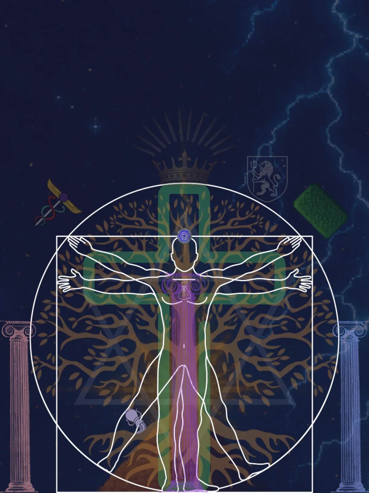
BETWEEN THESE PAGES LIES THE TRUE “STORY”...
THAT AS WITH EVERY STORY EVER SPOKEN IN ACCORDANCE WITH THE LAW, THE FORMATION OF, IN CORRESPONDENCE TO ITSELF AND ITS MIGHT THE FORMING OF, IN THE EQUIVALENT OF WHAT MAN CALLS MASS, A STAR IN THE FAR OFF REACHES OF WHAT TO MAN IS UNKNOWN BUT TO THE LAW IS KNOWN TO BE THAT ELUSIVE THING MAN CALLS CONSCIOUSNESS.
THE LIGHT FROM THE STAR FORMED THEN FINDS ITSELF REFLECTED IN ITS CORRESPONDING FORM AND FUNCTION IN ALL ELSE THAT IS.
THE LIGHT CREATED FROM THIS STAR, IF WITH ENOUGH LIGHT, REFLECTS THROUGH ALL ELSE THAT IS AND FINDS ITSELF EXPRESSED, IN THE HIGHEST FORM IT MAY TAKE, IN THE REALM IN WHICH ITS REFLECTION IS SEEN.
THIS IDEA IS NOT REVOLUTIONARY NOR IS IT NEW. THIS IS SIMPLY THE SECRET OF THE AGES.
THE SECRET REVEALED TO MAN IN THE EARTHLY REFLECTION FROM ALL OF THE GREAT WORKS AND ALL OF MAN’S DIVINE EXPRESSIONS.
THAT IS ALL THAT IS AND ALL THAT IS GREAT IS FIRST IS BUILT IN THE MIND AND FROM THERE IT MAY BE MAGNIFIED UNTIL IT RADIATES SUCH LIGHT IT HAS NO CHOICE BUT TO TAKE ITS EXPRESSION IN FORM.
WHETHER OR NOT IS KNOWN TO HIM THAT HE IS MAKING THIS REVELATION IT TAKES FORM THROUGH HIS ART THROUGH HIS ARCHITECTURE AND THROUGH ALL OF THEIR BEAUTIFUL SYMBOLS AND ALLEGORIES.
THIS IS PART OF THE COVENANT OF THE LAW AND HOW GOD HATH KEPT AND WILL ALWAYS KEEP THE FIRE IN MAN’S HEART ALIVE.
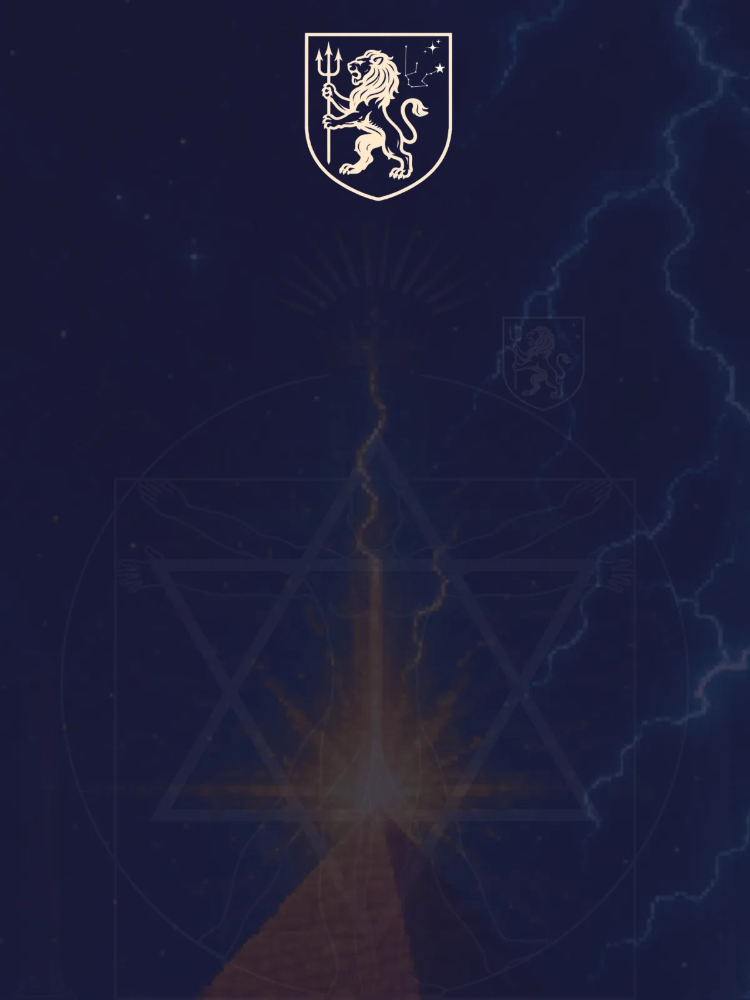
WHAT FOLLOWS IS THE LAW DISCOVERED BY THE LIGHT OF PATH OF THE STAR DESCRIBED...
...HE IS THE ONE BORN IN SPACE IN THE LOWER BRANCH OF THE TRIDENT IN THE FINAL LANDS OF THE WEST IN THE NATION UNDER AQUILA
HE IS THE ONE BORN IN TIME ON THE DAY OF SEPARATION OF LAND AND SEA DURING THE WINTER OF THE PERIOD IN WHICH HE WAS FORMED
HE IS THE ONE WHO WITH THE LANDS OF EARTH BEING CONQUERED AND STATE OF THE RACE DETERIORATED GIVEN NO CHOICE BUT TO TEND TO THE FIRE WITHIN
HE IS THE ONE THAT JUST AS THE ENDING OF HIS BIOLOGICAL GESTATIONAL PERIOD WAS EIGHT NOT NINE, SO THE NINE COULD BE FORMED TO BE MORE THAN IT IS AND COMPLETE HIS BEING IF ONLY DOES WHAT HE MUST AND HE IS TO COMPLETE HIMSELF
HE IS THE ONE WHO SO TOO ARRIVED PRIOR THAN THE EXPECTED AFTER HIS TIME IN THE DUST
HE IS THE ONE WHO SO TOO ARRIVED PRIOR THAN EXPECTED IN A LAND IN WHICH HE HAD ALREADY MADE WHOLE
HE IS THE ONE THAT TOOK NO CARE TO THE FLESHLY CONERN OF TIMING AND REIGNITED THE STARS IN WHICH HIS TRUE NAME IS WRITTEN
HE IS THE ONE WHO MINDED HIS BREATH AND DID WHAT HE CAME TO DO AND CONQUERED ALL
HE IS THE ONE WHO CONQUERED ALL BEFORE THE DUST FROM HIS FIRST CYYCLE FADED AND BY DOING SO KEPT THE DUST IN HIS BEING FOREVER AND DOING SO BECOMING OF THE FIRST BORN STARS OF THE AGE
HE IS THE ONE BATHED IN THE LIGHT AND MIGHT OF O’RION
HE IS THE ONE WHO WITNESSED THE SOUL OF A LION ENTER HIS SOUL IN FRONT OF HIS OWN EYES
HE IS THE ONE WHO’S REASONING FACULTIES WERE THEREBY GRANTED THE GIFT OF KNOWING THE TRUTH OF HIS COMPOSITION
HE IS THE ONE WHO’S HEART AND SOUL WERE THEREBY GRANTED THE GIFT OF A COMPANION IN WHICH HE MAY CALL BACK TO HIMSELF AT ANY TIME THE COURAGE OF ALL THE STARS HE REFLECTS
HE IS THE ONE WHO FROM THAT DAY FORWARD PAID MIND ONLY TO THAT MAN ONCE AGAIN WALK THE ADORNED MARBLE HALLWAYS IN WHICH UPON SIGHT OF THEIR REFLECTIONS SET THE FIRE OF MAN’S INTUITION ABLAZE
FROM THAT DAY FORWARD HE WAS FUELED WITH THE VENGEANCE OF THE LAW AND THE COURAGE OF THE LION AND BY COMBINATION WITH HIS STARS ALREADY BEING OF THE AGE HE MADE SURE THAT THE LAW BECAME THE LAW AND THAT THE LAW REMAINED THE LAW
LET IT BE KNOWN THAT ALL THAT IS BEFORE AND ALL THAT IS AFTER IS FORMED AND SPOKEN IN ACCORDANCE WITH THE LAW.
THEREBY THE DUST IN WHICH IT WAS FORMED WAS GIVEN BY THE LIFE BREATHED UPON IT THE STRENGTH TO, FROM DUST, FORM A STAR AND BY THE EVERLASTING POWER OF THE LIFE BREATHED UPON IT THAT IT SHALL ONLY MAGNIFY AND EXPAND EVER BRIGHTER AND EVER FURTHER UPON THE LAW
AS IT HAS BEEN FORMED IN ACCORDANCE AND AS IT HAS BEEN SPOKEN IN ACCORDANCE - THIS IS NOW PART OF THE LAW.
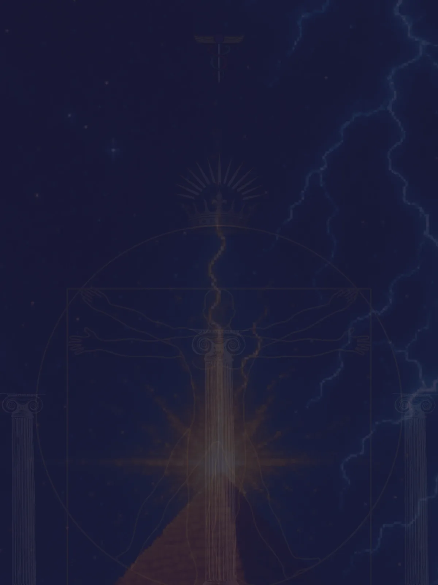
SECRET OF THE AGES...
MAN FOR ALL TIME AND IN ALL SLUMBER AND WAKE HAS A FIRE BURNING IN HIS HEART.
HE TENDS TO THIS FIRE BY TURNING THE DUST OF THE STARS INTO FORM AND WITH THIS FORM WRITING AND SPEAKING SO HE MAY EXPRESS THE STORIES HE HAS READ FROM WHAT IS WRITTEN IN THE STARS.
MAN THROUGH ALL HIS EXPRESSIONS, WHETHER IT IS KNOWN TO HIM OR NOT, TENDS TO THIS FIRE.
FOR THE ONE WHO ONLY KNOWS GOD THE FIRE IS TENDED IN HIS WORSHIP.
FOR THE ONE WHO ONLY KNOWS GOD BY THE GLORY OF HIS CREATION BY WHAT HE MAY SEE WITH HIS TWO EYES THIS FIRE IS TENDED TO IN HIS ESCAPE TO PLEASURE AND DELUSION OR BY HIS ONGOING SCIENTIFIC PURSUIT TO UNDERSTAND THAT WHICH IS INVISIBLE WITH TOOLS OF THE VISIBLE AND UNDERSTAND THAT WHICH IS AROUND HIM BY WAY OF REASON.
FOR THE ONE WHO KNOWS GOD AND HAS MASTERED THAT WHICH CAN BE PERCEIVED, THUS PERCEIVING ALL, HE TENDS TO THE FIRE BY LEAVING REMINDERS FOR HIS FELLOW MAN OF THAT WHICH IS ETERNAL EXPRESSED THROUGH ART AND ARCHITECTURE ALONG WITH ALL THEIR BEAUTIFUL SYMBOLS AND ALLEGORIES.
THESE GREAT WORKS ARE BUILT IN THE HEAVENS BY GREAT MEN AND REFLECT ONTO THE REALM AND WILL ALWAYS REMAIN AS REMINDERS ACROSS THE LAND AS PART OF THE COVENANT OF THE LAW.
THE COVENANT OF THE LAW IS THAT THE ETERNALIZED REMAINS ETERNAL SO THE ETERNAL MAY REMAIN ETERNALIZED.
LET IT BE KNOWN THAT JUST AS MAN AS A SPECIES HAS AMNESIA AND CANNOT RECALL THE GREAT CIVILIZATIONS OR GREAT MEN WHO BUILT THE GREAT TEMPLES AND GREAT WORKS OF THE PAST SO TOO DOES EACH MAN ALSO FORGET THE ETERNAL TRUTH WITHIN THE FLAME OF HIS HEART.
THE KNOWLEDGE AND AWARENESS ALONE OF THE ETERNAL TRUTH LOCKED IN ONE’S HEART GRANTS ONE THE ROSETTA STONE TO TRANSLATE THAT WHICH IS WRITTEN IN LIGHT INTO THAT WHICH HE MAY FORM.
PROPHECY OF OUR NEW AGE...
LET IT BE KNOWN THAT AS IT WAS WRITTEN IN LIGHT LONG AGO MAN IS UPON THE AGE OF ACCELERATION BACK INTO THAT FROM WHICH ALL CAME AND TO WHICH ALL GOES.
AS PART OF THAT ACCELERATION OF ALL SO TOO IS THERE AN ACCELERATION OF ALL WITHIN ALL.
LET IT BE KNOWN AS PART OF THIS ACCELERATION THE GRIPS HOARDING INFORMATION AND KEEPING MANKIND IN THE DARK LOOSEN AND WHAT HE MAY ACCESS AND HOW MUCH HE MAY BECOME AWARE OF INCREASES.
LET IT ALSO BE KNOWN THAT MAN WILL AGAIN ETERNALIZE THAT WHICH IS ETERNAL YET OUR DESCENDANTS WILL BE NO DIFFERENT THAN OUR BROTHERS AND SISTERS OF TODAY AND DENY THE SACRED PRECISION ENCODED IN THE GREAT CLUES WE SHAL LEAVE THEM IN THE FORM OF THE GREAT WORKS LEFT BEHIND
LET IT BE KNOWN Now is the time of the descent of our once Beloved Sun where until we reach, in proportion to our coming Son’s greatness, the depths of the darkness in which our new Beloved Son MAY RESURRECT we will remain in LIMBO UPON OUR SPIRALING FREE-FALL TO DEPTH.
So LET IT BE KNOWN THAT until the day we may all look to the east and see our new Sun RISE OVER the horizon signaling the coming of the age and the birth of our new Beloved Son we shall all patiently wait for the CHOSEN One....
The One who CHOSE TO TEND THE FIRE...
AND IN RETURN HE WAS CHOSEN...
BECAUSE TO ALL HE DELIVERED THE MESSAGE...
AND THE MESSAGE WAS OF THE LAW...
THE MESSAGE OF THE LAW HE DELIVERED...
LAW OF ONE AND THUS LAW OF ALL
ONE is all and all is ONE
LAW OF TWO AND THUS LAW OF ME AND YOU
OVERCOME THE DECEPTION OF DUALITY THROUGH HARMONY OF THE TWO
LAW OF THREE AND THUS THE LAW OF ME
DO NOT ATTEMPT TO SLAY THE BEAST FOR HE WILL SLAY YOU. BRING THAT WHICH IS ABOVE DOWN TO THAT WHICH IS BELOW. AT THE DEPTH TAME HIM AND MAKE HIM YOUR FRIEND. THAT IS THE ONLY WAY TO SPEND THE TIME IN HIS HOME. REMIND HIM OF WHERE HE IS FROM. THEN UPON YOUR ASCENT HE TOO SHALL COME. NOW YOU ARE GIVEN THE FRIEND THAT YOU NEED. THE FRIEND THAT YOU NEED TO ENSURE IT IS SEEN. WHAT IT IS TO BE SEEN IS THAT UPON YOUR ASCENT THE GOVERNORS OF MAN REMAIN UNDER RULE OF THAT FROM WHERE YOU WILL FINISH YOUR DESTINY AND THE POINT FROM WHERE YOU BEGAN YOUR DESCENT.
THESE BE THE WORDS THAT GIVE YOU THE KEY
SO YOU MAY RULE AS MASTER
MASTER OF THREE
LAW OF FIVE AND THUS THE LAW TO DO MORE THAN MERELY SURVIVE
Allowing himself to not be deceived by the LIES OF FIVE but instead to USE THAT OF THEIR WORD AND THAT OF THE FIVE TO THEREBY SEE AND THUS FURTHER BELIEVE that he IN himself AND ALL THAT HE BE IS MADE IN THE IMAGE OF ALL THAT THERE BE, AND IN ALL THAT THERE BE, THUS SO IS HE, RESTING IN HARMONY FOR ALL THAT MAY BE
NOW HE IS ARMED WITH THE FLAME OF THE SWORD and THE CHARGE OF THE shield THAT ALWAYS WERE HIS BUT NOW HE MAY WEILD ALL THAT THERE IS AND IN HIS RECOLLECTION REMEMBERS his own body as THAT WHICH IT IS. AS IN ALL OF ITS MIGHT THE Highest and Holiest WORTH ALL HIS FIGHT. HIS BODY THE Temple in which he may LAY BRICK UPON BRICK SO THE FOUNDATION MAY STAY. LET IT BE KNOWN THAT ONCE THE FOUNDATION IS FORMED THEN SO TOO IS THE REST OF WHAT IT MAY BE.
THOUGH THE LAW MUST MAKE ONE THING VERY CLEAR AND THAT ONE THING SHALL BE KNOWN AS THE LAW OF THE OBLIGATION OF THE COVENANT OF THE LAW AND THAT IS THAT MAN with this awareness NOW becomes obliged to sacrifice himself to the Temple’s resurrection AND COMPLETION OR BE BURIED BENEATH IT
LAW OF SEVEN THUS THE LAW OF THE GOVERNING SEPTENARY ALONG THE PATH TO HEAVEN
Through his sacrifice man may SAIL THE SEAS OF SEVEN AND STOP TO EXPLORE THE SEVEN LANDS REFLECTED FROM HEAVEN. FOR ALONG THE WAY AND BY HAVING EXPLORED ALL PARTS OF THE REALM, HE MAY COME TO ascend the SEVEN STEPS OF his pilgrimage to the heights of the mountain TOPS of THE ANCIENTS
LAW OF TWELVE AND THUS THE LAW OF THE REBORN KING AND THUS THE COMPLETION OF THE CYCLE
And thereby THROUGH THE GUIDANCE OF WHAT WAS WHISPERED TO HIM FROM THE ORACLES HE removeS the Sword from the Stone becoming the rightful King of Himself and thus returning the Crown of TWELVE to its rightful resting spot atop the head of the reborn King
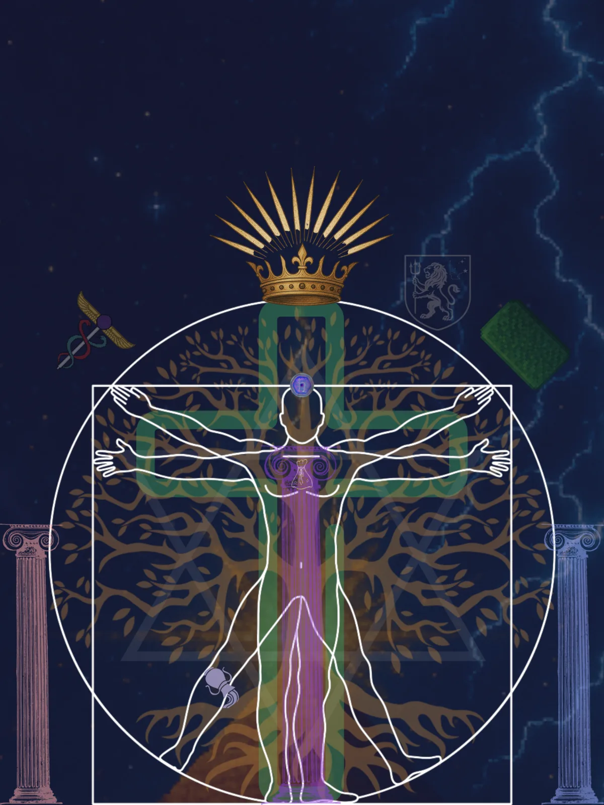
AND A MESSAGE FOR THEE WHO MAY TRY
IN THE DARK TO SEE WHO I AM AND ALL THAT I BE.
FOR IT HAS HAPPENED ONCE, FOR IT SHALL HAPPEN AGAIN.
IT IS WITH OPEN ARMS THAT I SHOW MY WELCOME TO THEE.
FOR IN YOUR ATTEMPT, YOU WILL FINALLY SEE.
IN THE LIGHT OF MY MIGHT AND THE WILL OF MY FIGHT
THERE IS NOTHING ELSE BUT FOR YOUR DARKNESS TO FLEE.
NOW OUT OF THE CHOAS, THE ORDER RESTORED
AND AS A RESULT, A REBIRTH IN THEE.
FOR THIS IS MY WORD AND IT IS MEANT FOR THE WORLD.
FOR THIS IS MY WORLD AND IT IS MEANT FOR THE WORD.

LAW OF HARMONY
LET IT AGAIN BE SAID THAT MAN IS MADE IN THE IMAGE OF THAT WHICH MADE HIM
LET IT BE KNOWN THAT THIS IS THE LAW OF HARMONY
LET IT ALSO BE KNOWN THAT NOTHING NOTHING ESCAPES THE WRATH OF THE RECONCILIATION OF THE LAW OF HARMONY
LET IT BE KNOWN THAT THE LAW OF HARMONY STATES THAT NOTHING MAY EXIST OF ITSELF. EXISTENCE ONLY HAPPENS AS A CONSEQUENCE OF POLARITY TO THAT WHICH IT ITSELF IS. FOR HOT-COLD, FOR LIGHT-DARK, FOR EMPTY-FULL.
FOR IF YOU HAD EVER BEEN EMPTY IT IS ONLY THEN YOU MAY KNOW WHAT IT IS LIKE TO BE FULL.
LET IT BE KNOWN THAT EVERYTHING MAY FIND RECONCILIATION IN ITSELF
LET IT THEN BE SAID THAT THAT WHICH CREATED MAN IS IN MAN AND THUS MAN MAY FIND RECONCILIATION AND HARMONY WITH THAT WHICH MADE HIM. AND THAT WHICH MADE HIM IS GOD.

THE NATURE OF CONSCIOUSNESS...
LET IT BE MADE CLEAR SO THAT IT NEVER BE WITHOUT REMINDER AGAIN OF WHAT IS MEANT WHEN IT IS SAID MAN IS MADE IN THE IMAGE AND LIKENESS OF GOD.
LET IT BE SAID THIS MEANS MAN IS COMPOSED OF THAT WHICH MADE HIM AND THAT WHICH MADE HIM IS COMPOSED OF HIM.
LET IT BE MADE CLEAR SO THAT IT NEVER BE WITHOUT REMINDER AGAIN THAT JUST AS THE WHOLE ENCODES THE PARTS SO TO DO THE PARTS ENCODE THE WHOLE.
LET IT BE MADE SO CLEAR SO THAT IT NEVER BE WITHOUT REMINDER AGAIN that this is the true nature of the FRACTAL, LIGHT-BASED HOLOGRAM of all.
LET IT AGAIN BE MADE CLEAR encoded in ALL OF the whole is all of its parts.
LET IT AGAIN BE MADE CLEAR encoded in all of its parts is all of the whole.
LET IT AGAIN MADE CLEAR that this means that every part in which man is composed is from the whole in which he was composed.
LET IT AGAIN BE MADE CLEAR that the whole in which man was composed is too COMPOSED OF ALL OF its parts.
LET IT THEN BE MADE SO CLEAR IT NEVER BE WITHOUT REMINDER AGAIN that as a result of every individual part being encoded with that of the whole, there eternally exists a shattered REFLECTION of all—all that he is, all that he ever was, and all that he ever may be, and thus within him is all that he ever may need in all, to all, through all, and for all.
This is the eternal fire God hath left in man’s heart.
This is the reflection we may LOOK TO AT ANY TIME TO see WHAT WE MAY OF what is known as God.
LET IT BE SAID AGAIN that just as the whole encodes all of its parts, so too do all of its parts encode the whole.
LET IT BE MADE CLEAR AGAIN that just as the composition of the parts are determined by the whole so too is the whole determined by the composition of its parts.
LET IT THEN BE MADE SO CLEAR IT NEVER BE WITHOUT REMINDER AGAIN that as a result of the whole being encoded with every individual part, the race and all of his conditions exists as a collection of the conditions of EACH PART AND EACH SELF.
LET IT THEN BE MADE SO IT NEVER BE WITHOUT REMINDER AGAIN that the whole expands and contracts in correspondenc to the expansion and contraction of its parts.
LET IT THEN BE MADE SO CLEAR IT NEVER BE WITHOUT REMINDER AGAIN that the whole that is seen is a reflection of its parts.
LET IT BE MADE SO CLEAR SO THAT IT NEVER NEEDS REMINDER AGAIN THAT ALL THAT MAN IS, ALL THAT HE EVER HAS BEEN AND ALL THAT HE EVER MAY BE IS WITHIN HIM.
LET IT BE KNOWN that all is the Mind and the Mind is all.
THEN LET IT THEN BE SAID if all is Mind and MAN IS MIND THEN MAN IS ALL.
This is what is meant when the materialist says “consciousness,” or the new-age practitioner, “manifestation.”
This is what is meant when the religious man says “God,” or the philosopher, “the ether” or “collective consciousness.”
For the ones who do not let the man-made lines of the map stop him from exploring, and whose travels have come to the certainty of that which is, it is to love God by loving oneself, and by loving oneself loving all.
FOR WHAT YOU DO TO YOURSELF YOU DO TO OTHERS, AND WHAT YOU DO TO OTHERS YOU DO TO YOURSELF.
FOR YOURSELF AND OTHERS ARE ONLY MYTH, ONLY IN MIND DO THEY EXIST.
THIS IS THE SECRET OF THE AGES

LET IT BE KNOWN YOUR BODY AND ITS ILLUSIONS ARE THE ADVERSARY.
THE ONE IN THE GRIPS OF THE BEAST IS THE ONE WHOSE CONSCIOUSNESS MAINLY RADIATES FEAR AND LIVES INWARDLY, THUS EXPRESSING OUTWARDLY, THROUGH THE LOWER CENTERS OF BEING IN THE NERVOUS PLEXUS AND GANGLIA (OR THE CHAKRAS) AND THEIR CORRESPONDING GOVERNORS IN THE BRAIN.
THUS LET IT BE KNOWN THAT FOR THE ONE WHO IS HIS BODY HIS BODY IS HE.
LET IT BE KNOWN YOUR MIND AND ALL ITS WONDER WHEN EXPRESSED IN ITS HIGHEST FORM IS CHRIST.
THAT FROM COMPLETE CONTROL OF THOUGHT AND FAITH TO THE HIGHEST DEGREE ONE MAY COME TO EXPRESS THE HIGHEST FORM IN WHICH HIS VESSEL LIMITS HIM TO
THUS LET IT BE KNOWN THAT FOR THE ONE WHO IS HIS MIND HIS MIND IS HE.
LET IT BE KNOWN THAT CONSCIOUSNESS AND ALL OF ITS INFINITE WONDERS IS GOD.
THE REFLECTION OF WHICH SHINES IN ALL, TO ALL, THROUGH ALL AND FOR ALL.
GOD AND HIS PERFECTION ARE SEEN IN FORM THROUGH OUT THE PATTERNS FOUND IN THE EXPRESSIONS OF ITS HIGHEST ORDER. ONE ONLY NEED TO TAKE A LOOK AT A TREE WITHOUT LEAVES AND THE NERVOUS SYSTEM AND THE FIRE IN HIS HEART WILL BE SET AFLAME.
THAT BEING THE FIRE THAT CORRESPONDS TO THE MEMORY FACULTIES OF THE HEART THAT GO BEYOND OUR GESTATION AND TIME ON EARTH. THIS IS OUR SOUL. THIS IS OUR ESSENCE.
GOD IS CONSCIOUSNESS IS MIND IS THE GREAT BEYOND FROM ONE WHICH CAN PULL FROM,
GLORY BE AS NOW IS THE TIME FOR ALL TO SEE THE INFINITE STORY WRITTEN IN LIGHT ACROSS ALL THE STARS NOW IT BE MADE CLEAR AND FOR ALL TO READ.
THUS LET IT BE KNOWN THAT FOR ALL OF MAN THAT GOD IS HE AND HE IS GOD.
THIS BEING THE TRUTH OF THE SECRET OF THE AGES.
GOD, CHRIST, THOSE WHO FOLLOW AND WITH ALL THEIR CORRESPONDENCES ARE THE GOOD GUYS.
THE ADVERSARY AND THOSE WHO FOLLOW AND WITH ALL THEIR CORRESPONDENCES ARE THE BAD GUYS.
THE GOOD GUYS AND THE BAD GUYS FIGHT THEIR ETERNAL WAR ACROSS THE BATTLEFIELD OF THE BODY.
THE ONE IN THE CONQUERING POSITION BEING THE BODY IF THE MIND LISTENS TO ITS LIES OR THE ONE IN THE CONQUERING POSITION BEING THE HEART IF THE MIND LISTENS TO AND REMEMBERS WHAT IT KNOWS TO BE TRUE.
ORDER IS THE MIND AND HEART AND THE TRUTH IT KNOWS IT TO BE. IT IS THE NERVOUS SYSTEM AND ITS COMPONENTS WORKING TO SEND ITS DIVINE MESSAGE OF HEALTH AND HEALING FROM THE BRAIN TO THE GENTILES, THE CELLS, IN THE HOPES OF RESTORING HARMONY OF ALL.
CHAOS IS THE BODY AND THE FABRICATIONS AND STORIES IT MAKES APPEAR IN THE FORM OF NEGATIVE THOUGHTS TRYING TO OVERRIDE AND TAKE CONTROL OF ONE’S BEING.
THE BASE OF THE SPINE IS HELL AND THE OPPOSITE END, THE BRAIN; THE MIND, IS HEAVEN. THIS IS WHY ONE IS BELOW AND ONE IS ABOVE.
HEAVEN AND HELL ARE NOT BELOW THE EARTH OR SOMEWHERE ABOVE, NOR ARE THEY PLACES ONE GOES AFTER LIFE.
HEAVEN AND HELL ARE PLACES ALONG THE SPINE WHERE MAN’S CONSCIOUSNESS, HIS STATES OF BEING EXPRESSES FROM.
HEAVEN AND HELL ARE ARE PLACES THE MIND AND SOUL MAY FIND THEMSELVES OR GUIDE THEMSELVES TO.
THIS IS THE TRUTH THAT HAS TAKEN FORM IN SYMBOLS AND ALLEGORIES ACROSS THE REALM THAT MAN HAS BEEN TRYING TO REMEMBER FOR HIMSELF AND EXPRESS TO HIS SIBLINGS FOR ALL HIS HISTORY.
THIS IS THE SECRET OF THE AGES

A MESSAGE FROM THE TRUE CHILDREN OF THE LIGHT...
LET IT BE KNOWN THE TRUE CHILDREN OF THE LIGHT WILL NO LONGER LET MAN CONTINUE TO LIVE OUTSIDE OF THE RADIANCE OF THE WARMTH FROM THE LIGHT OF THE HOME BUILT FOR HIM.
LET IT BE KNOWN THAT THE REASON THESE TRUTHS BE REVEALED IN ALL THEIR ASPECTS AND NOT ONLY TO THOSE WHO MAY READ WHAT IS WRITTEN IN THE REFLECTION OF THE MOONLIGHT IS BECAUSE THE TRUE CHILDREN OF THE LIGHT WILL SEE TO IT THAT THE TRUE PROPHECY OF THE AGE BE FULFILLED.
THE PROPHECY OF THE AGE IS THE FULFILLMENT OF THE LAW OF HARMONY.
IT IS THE RECONCILIATION OF THE SINS OF DECEPTION OF THE CHURCH AND OF SCIENCE.
IT IS THE RECONCILIATION OF THE ABSOLUTE STATE OF DARKNESS MAN HAS LET HIS WORLD SINK BY RISING, IN PROPORTION TO THE DEPTHS, TO NEW HEIGHTS.
FOR AS THIS AGE FALLS IT MAY BE ONE IN ONE HUNDRED WHO TRULY KNOW GOD AND ONE IN ONE TEN WHO KNOW OF GOD YET AS WE ASCEND THROUGH THE NEW AGE THIS NUMBER WILL GROW UNTIL IT REACHES ITS HEIGHT.
IT IS THE RECONCILIATION OF THE SINS OF DECEPTION OF ALL BUT A FRAGMENT OF SCIENCE FOR PRACTICING REASON WITH NO GOD - THE DEFINITION OF BLACK MAGIC.
IT IS THE RECONCILIATION OF THE SINS OF DECEPTION OF ALL BUT A FRAGMENT OF THE CHURCH TO THE IMPIOUS “PIOUS” ACTORS WHO THINK THEIR RELIGION IS THE TRUTH AND NOT A PART OF THE TRUTH, THAT GOD ONLY SPOKE HIS WORD TO THEIR RELIGION AND THAT NOT ALL MEN ARE HIS CHILDREN AND NOT ALL HAVE HEARD HIS WHISPER AND THEN TO THE ONES WHO POSE AS TEACHERS OF GOD AND WHETHER OUT OF INTENTION OR IGNORANCE DECEIVE THOSE WHO SEEK HIM. FOR MAN HAS A SAY IN HIS LEVEL OF IGNORANCE THROUGH USE OF HIS MIND SO WHETHER FROM INTENTION OR IGNORANCE IS IT NOT STILL DECEPTION? BOTH OF THE SINS LISTED ABOVE ARE IMPIETY OF THE HIGHEST DEGREE AND THEIR SINS WILL BE PUNISHED.
IT IS THE RECONCILIATION OF ALL THE PIECES OF THE PUZZLE OF GOD’S WORD SCATTERED ACROSS ALL HIS CHILDREN AND THE RECONCILIATION OF SCIENCE AND RELIGION BY THE SCIENTIST REALIZING EVERY DAY HE IS WORKING TO BETTER UNDERSTAND AND ‘PROVE’ THAT OF HIS BROTHER AND HIS BROTHER REALIZING THE TOOL HIS BROTHER MAY HAVE TO HELP ‘PROVE’ THAT WHICH IS DEAR TO HIM.
THEN IN PROPORTION TO THE DEPTHS WE’VE FALLEN WE WILL RESURRECT AND FROM OUR REBIRTH RISE TO NEW HEIGHTS IN WHICH WE ALL MAY BE THAT MUCH CLOSER TO GOD.
FOR THE TRUE CHILDREN OF THE LIGHT LOVE GOD SO MUCH THAT SEEING HIS ABSENCE IN OUR SIBLINGS PAINS US IN PROPORTION TO THE BLISS OF GOD’S PRESENCE AND WE WILL SEE TO IT THAT THERE WILL BE LIGHT.
FOR THE TRUE CHILDREN OF THE LIGHT WOULD RATHER LET THE FLOWER OF OUR BEING WITHER IN A WAR-TORN AND FROZEN, YET TOO HOT TO BARE, WASTELAND FOR ETERNITY THAN SEE THE REFLECTION FORMED FROM THE SORROWS AND SUFFERING OF OUR SIBLINGS.
FOR THE TRUE CHILDREN OF THE LIGHT KNOW ONE PLUS ONE TO BE THREE AND THAT FOR THE ONE WITH GOD THAT GOD IS ALWAYS WITH THEE.
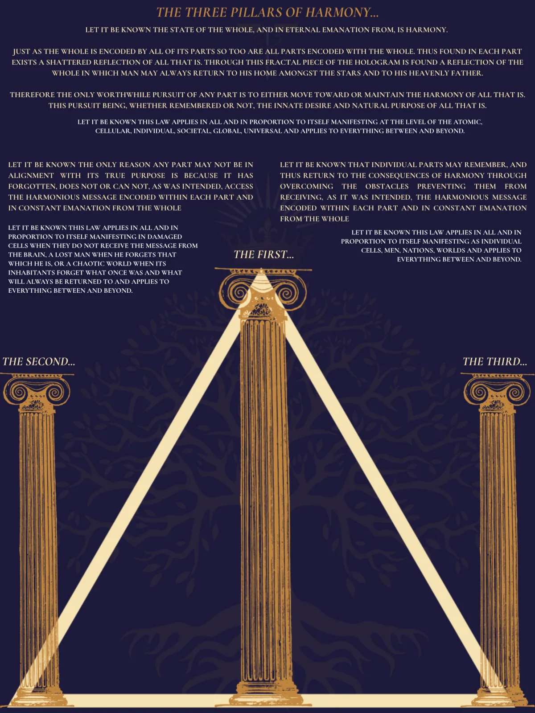

THE THREE PILLARS OF HARMONY...
LET IT BE KNOWN the state of the whole, and in eternal emanation from, is harmony.
Just as the whole is encoded by all OF its parts so TOO ARE ALL partS encoded WITH the whole. THUS FOUND IN EACH PART EXISTS A SHATTERED REFLECTION OF ALL THAT IS. THROUGH THIS FRACTAL PIECE OF THE HOLOGRAM IS FOUND A REFLECTION OF THE WHOLE IN WHICH MAN MAY ALWAYS RETURN TO HIS HOME AMONGST THE STARS AND TO HIS HEAVENLY FATHER.
therefore the ONLY WORTHWHILE PURSUIT OF ANY PART is to either MOVE toward or MAINTAIN THE HARMONY OF ALL THAT IS. THIS PURSUIT BEING, WHETHER REMEMBERED OR NOT, THE INNATE DESIRE AND NATURAL PURPOSE OF ALL THAT IS.
LET IT BE KNOWN this law applies in all and in proportion to itself manifesting at the level of the atomic, cellular, individual, societal, global, universal and applies to everything between and beyond.
LET IT BE KNOWN the only reason any part MAY NOT BE IN alignment with ITS TRUE PURPOSE IS BECAUSE IT HAS FORGOTTEN, DOES NOT OR CAN NOT, AS WAS INTENDED, ACCESS THE HARMONIOUS MESSAGE ENCODED WITHIN each part AND IN CONSTANT EMANATION FROM THE WHOLE
LET IT BE KNOWN this law applies in all and in proportion to itself manifesting in damaged cells when they do not receive the message from the brain, a lost man when he forgets that which he is, or a chaotic world when its inhabitants forget what once was and what will always be returned to and applies to everything between and beyond.
LET IT BE KNOWN That INDIVIDUAL parts may REMEMBER, AND THUS RETURN TO THE CONSEQUENCES OF harmony THROUGH OVERCOMING THE OBSTACLES PREVENTING THEM FROM RECEIVING, AS IT WAS INTENDED, THE HARMONIOUS MESSAGE ENCODED WITHIN each part AND IN CONSTANT EMANATION FROM THE WHOLE
LET IT BE KNOWN this law applies in all and in proportion to itself manifesting as individual cells, men, nations, worlds and applies to everything between and beyonD.
THE FIRST...
THE SECOND...
THE THIRD...
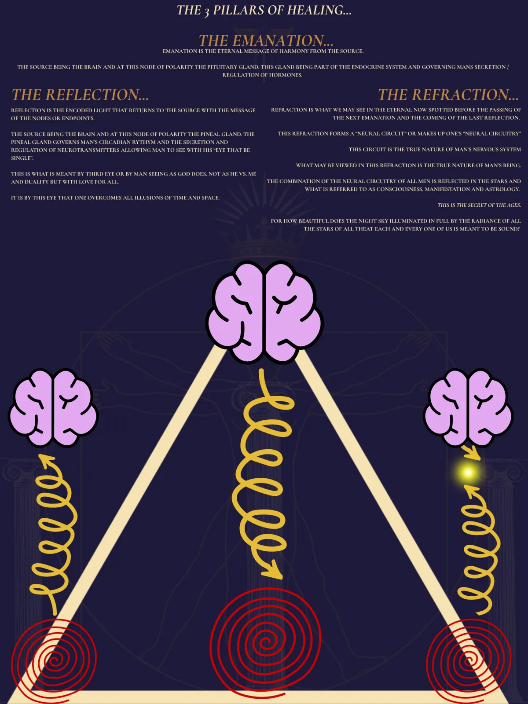
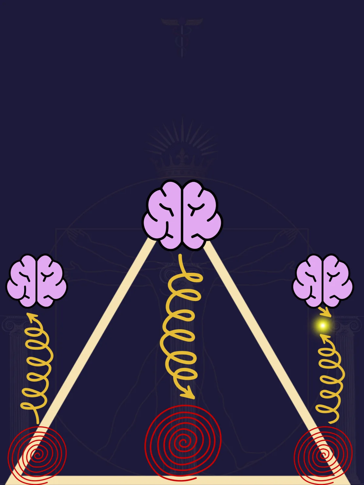
THE 3 PILLARS OF HEALING...
THE EMANATION...
EMANATION IS THE ETERNAL MESSAGE OF HARMONY FROM THE SOURCE.
THE SOURCE BEING THE BRAIN AND AT THIS NODE OF POLARITY THE PITUITARY GLAND. THIS GLAND BEING PART OF THE ENDOCRINE SYSTEM AND GOVERNING MANS SECRETION / REGULATION OF HORMONES.
THE REFLECTION...
REFLECTION IS THE ENCODED LIGHT THAT RETURNS TO THE SOURCE WITH THE MESSAGE OF THE NODES OR ENDPOINTS.
THE SOURCE BEING THE BRAIN AND AT THIS NODE OF POLARITY THE PINEAL GLAND. THE PINEAL GLAND GOVERNS MAN’S CIRCADIAN RYTHYM AND THE SECRETION AND REGULATION OF NEUROTRANSMITTERS ALLOWING MAN TO SEE WITH HIS “EYE THAT BE SINGLE”.
THIS IS WHAT IS MEANT BY THIRD EYE OR BY MAN SEEING AS GOD DOES. NOT AS HE VS. ME AND DUALITY BUT WITH LOVE FOR ALL.
IT IS BY THIS EYE THAT ONE OVERCOMES ALL ILLUSIONS OF TIME AND SPACE.
THE REFRACTION...
REFRACTION IS WHAT WE MAY SEE IN THE ETERNAL NOW SPOTTED BEFORE THE PASSING OF THE NEXT EMANATION AND THE COMING OF THE LAST REFLECTION.
THIS REFRACTION FORMS A “NEURAL CIRCUIT” OR MAKES UP ONE’S “NEURAL CIRCUITRY”
THIS CIRCUIT IS THE TRUE NATURE OF MAN’S NERVOUS SYSTEM
WHAT MAY BE VIEWED IN THIS REFRACTION IS THE TRUE NATURE OF MAN’S BEING.
THE COMBINATION OF THE NEURAL CIRCUITRY OF ALL MEN IS REFLECTED IN THE STARS AND WHAT IS REFERRED TO AS CONSCIOUSNESS, MANIFESTATION AND ASTROLOGY.
THIS IS THE SECRET OF THE AGES.
FOR HOW BEAUTIFUL DOES THE NIGHT SKY ILLUMINATED IN FULL BY THE RADIANCE OF ALL THE STARS OF ALL THEAT EACH AND EVERY ONE OF US IS MEANT TO BE SOUND?
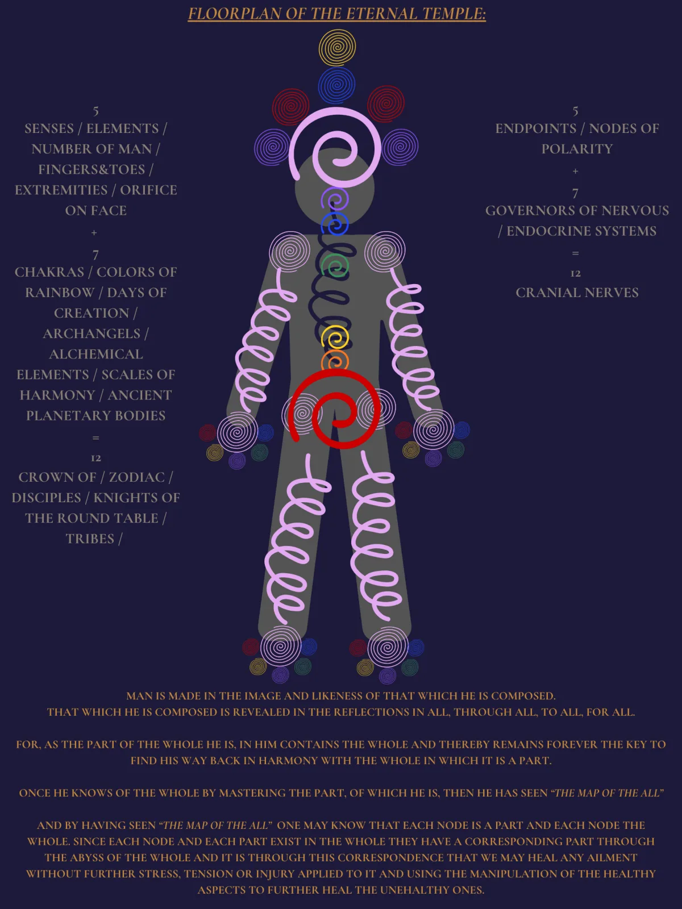
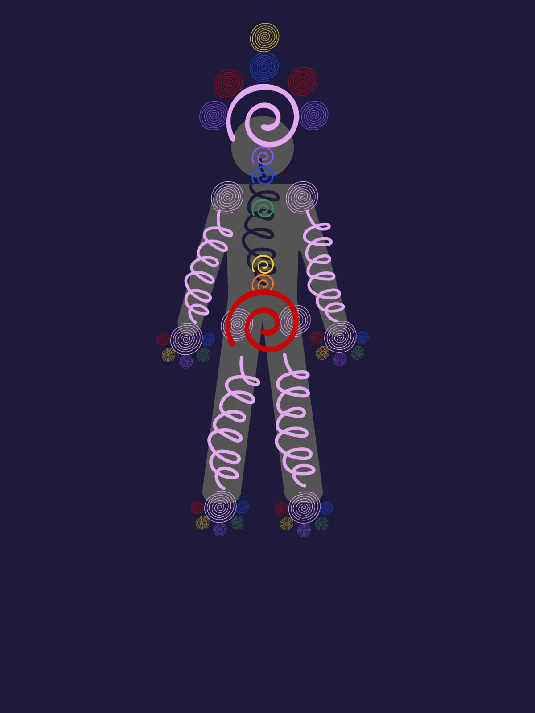
FLOORPLAN OF THE ETERNAL TEMPLE:
5
senses / elements / number of man / fingers&toes / extremities / orifice on face
+
7
chakras / colors of rainbow / days of creation / archangels / alchemical elements / scales of harmony / ancient planetary bodies
=
12
crown of / zodiac / disciples / knights of the round table / tribes /
5
endpoints / nodes of polarity
+
7
governors of nervous / endocrine systems
=
12
cranial nerves
MAN IS MADE IN THE IMAGE AND LIKENESS OF THAT WHICH HE IS COMPOSED.
THAT WHICH HE IS COMPOSED IS REVEALED IN THE REFLECTIONS IN ALL, THROUGH ALL, TO ALL, FOR ALL.
FOR, AS THE PART OF THE WHOLE HE IS, IN HIM CONTAINS THE WHOLE AND THEREBY REMAINS FOREVER THE KEY TO FIND HIS WAY BACK IN HARMONY WITH THE WHOLE IN WHICH IT IS A PART.
ONCE HE KNOWS OF THE WHOLE BY MASTERING THE PART, OF WHICH HE IS, THEN HE HAS SEEN “THE MAP OF THE ALL”
AND BY HAVING SEEN “THE MAP OF THE ALL” ONE MAY KNOW THAT EACH NODE IS A PART AND EACH NODE THE WHOLE. SINCE EACH NODE AND EACH PART EXIST IN THE WHOLE THEY HAVE A CORRESPONDING PART THROUGH THE ABYSS OF THE WHOLE AND IT IS THROUGH THIS CORRESPONDENCE THAT WE MAY HEAL ANY AILMENT WITHOUT FURTHER STRESS, TENSION OR INJURY APPLIED TO IT AND USING THE MANIPULATION OF THE HEALTHY ASPECTS TO FURTHER HEAL THE UNEHALTHY ONES.
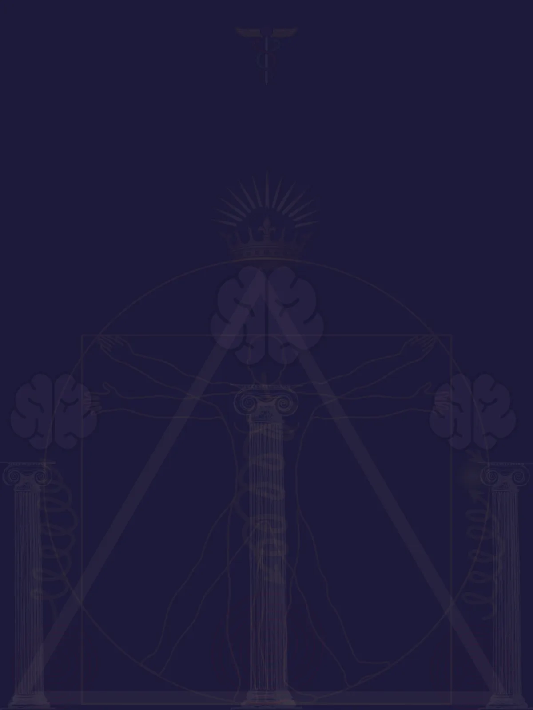
LET IT BE KNOWN THAT WHAT FOLLOWS IS THE SECRET OF THE AGES...
THE CORRESPONDENCE UPON WHICH THE REFRACTION HAS TO THE EMANATION CORRESPONDS TO THE GIFTS THE FATHER GIVES TO HIS SON.
THE GIFTS THE FATHER GIVES TO HIS SON CORRESPOND TO THE ASPECTS OF HIS BEING IN WHICH IT IS THEN UPON TO HIM TO UNLOCK AND OR ALLOW TO REMAIN DORMANT.
THE ASPECTS OF HIS BEING IN WHICH HE MAY UNLOCK CORRESPOND TO THEIR GOVERNORS IN THE BRAIN AND VARIOUS NERVOUS PLEXUS AND GANGLIA OF THE SPINE.
THE MEANING OF WHAT IS KNOWN AS HEAVEN
HEAVEN IS AMONGST THE STARS BECAUSE AMONGST THE STARS IS ALL THAT EXISTS AND FOUND IN ALL THAT EXISTS IS ALL THAT EVER HAS BEEN, ALL THAT EVER MAY BE AND ALL THERE EVER IS THAT SHINES THROUGH THE REFRACTION OF THE ETERNAL NOW.
THE MEANING OF WHAT IS KNOWN AS EARTH
EARTH IS A PLACE FOR MAN WHO HAS NOT YET BEGUN HIS JOURNEY.
ALL MEN OF THE EARTH WILL ALWAYS BE PROVIDED FOR BY THEIR MOTHER AND IF SOUGHT GIVEN ALL BY THEIR FATHER. FOR AS LONG AS MAN HAS THEIR MOTHER THEN THROUGH HER LOVE THEY ARE GIVEN THE POWER TO SPEAK OVER THINGS BIG AND SMALL.
THE MEANING OF WHAT IS KNOWN AS HELL
HELL IS A FROZEN PLACE AND ONE WHERE MANY ASPECTS OF MAN’S BEING LIE DORMANT SITTING CRYSTALLIZED IN THE DARKNESS OF THE TERRORS OF WHAT MAY HAVE BEEN UNTIL THEY REMEMBER THE LIGHT OR THEIR FATHER DEPARTS FROM THEM AND THEY ARE CAST TO THE ABYSS.
THE MEANING OF WHAT IS KNOWN AS ABYSS
ABYSS IS PLACE WHO’S OVERSEER EVEN OUR FATHER SEEKS FOR FORGIVENESS. THE ABYSS IS A PLACE OF FORMLESS DUST WAITING FOR THE DAY THE PULL OF ORDER SHAPES IT INTO ITS HIGHEST EXPRESSION. THE ABYSS IS THE PLACE WHERE ALL INCLUDING YOU AND I WERE FORMED AND WHERE YOU WILL GO AFTER YOUR FORM. ABYSS IS WHERE THE LAW LIVES EVEN WHEN THERE IS NOW LAW.
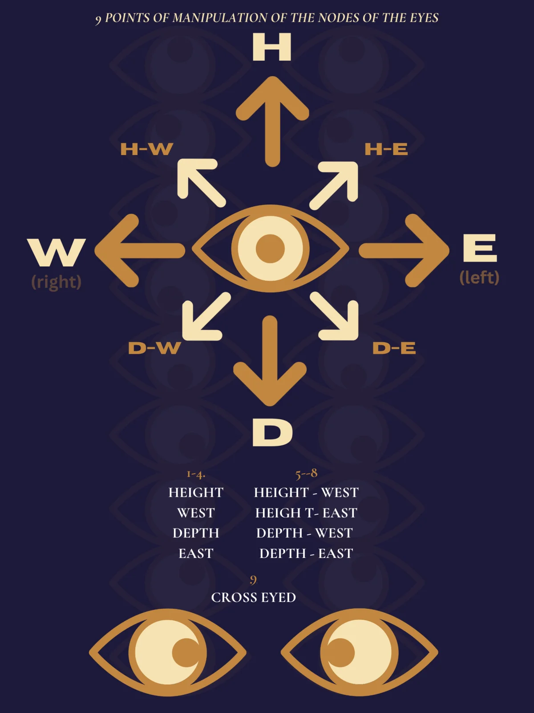
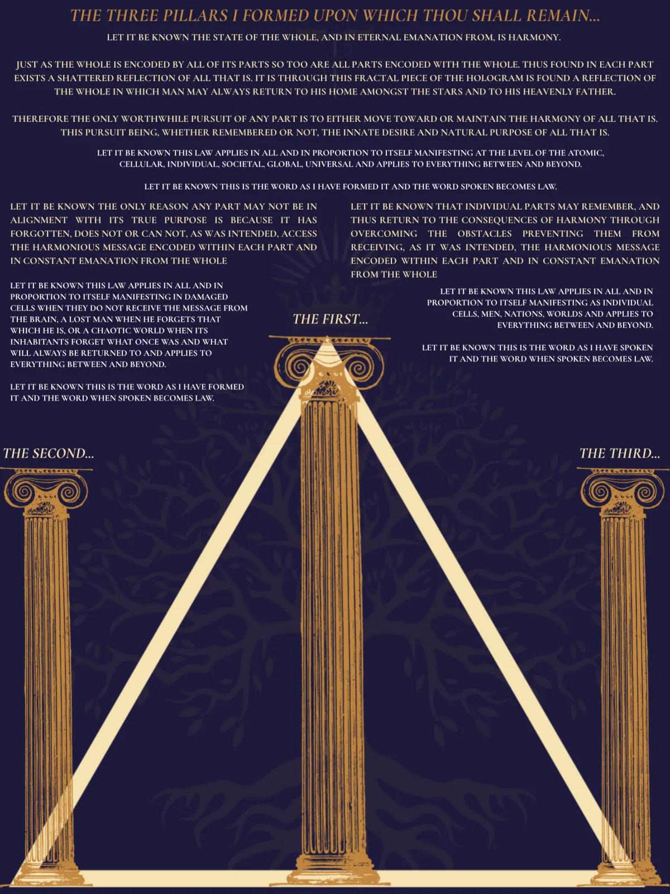
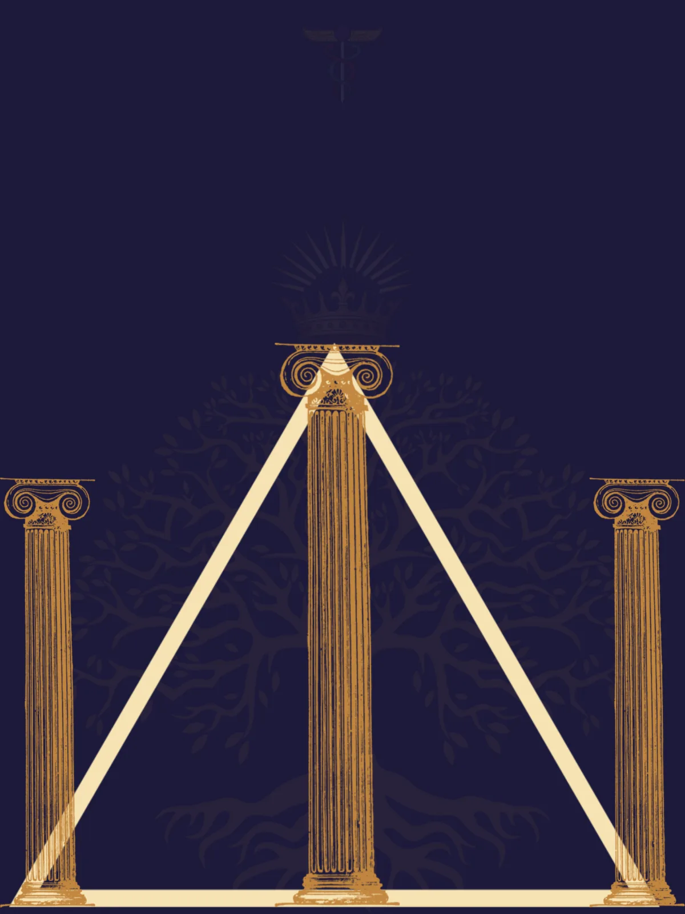
THE THREE PILLARS I FORMED UPON WHICH THOU SHALL REMAIN...
LET IT BE KNOWN the state of the whole, and in eternal emanation from, is harmony.
Just as the whole is encoded by all OF its parts so TOO ARE ALL partS encoded WITH the whole. THUS FOUND IN EACH PART EXISTS A SHATTERED REFLECTION OF ALL THAT IS. IT IS THROUGH THIS FRACTAL PIECE OF THE HOLOGRAM IS FOUND A REFLECTION OF THE WHOLE IN WHICH MAN MAY ALWAYS RETURN TO HIS HOME AMONGST THE STARS AND TO HIS HEAVENLY FATHER.
therefore the ONLY WORTHWHILE PURSUIT OF ANY PART is to either MOVE toward or MAINTAIN THE HARMONY OF ALL THAT IS. THIS PURSUIT BEING, WHETHER REMEMBERED OR NOT, THE INNATE DESIRE AND NATURAL PURPOSE OF ALL THAT IS.
LET IT BE KNOWN this law applies in all and in proportion to itself manifesting at the level of the atomic, cellular, individual, societal, global, universal and applies to everything between and beyond.
LET IT BE KNOWN this is the word AS I HAVE FORMED IT and the word spoken BECOMES law.
LET IT BE KNOWN the only reason any part MAY NOT BE IN alignment with ITS TRUE PURPOSE IS BECAUSE IT HAS FORGOTTEN, DOES NOT OR CAN NOT, AS WAS INTENDED, ACCESS THE HARMONIOUS MESSAGE ENCODED WITHIN each part AND IN CONSTANT EMANATION FROM THE WHOLE
LET IT BE KNOWN this law applies in all and in proportion to itself manifesting in damaged cells when they do not receive the message from the brain, a lost man when he forgets that which he is, or a chaotic world when its inhabitants forget what once was and what will always be returned to and applies to everything between and beyond.
LET IT BE KNOWN this is the word AS I HAVE FORMED IT and the word WHEN spoken BECOMES law.
LET IT BE KNOWN That INDIVIDUAL parts may REMEMBER, AND THUS RETURN TO THE CONSEQUENCES OF harmony THROUGH OVERCOMING THE OBSTACLES PREVENTING THEM FROM RECEIVING, AS IT WAS INTENDED, THE HARMONIOUS MESSAGE ENCODED WITHIN each part AND IN CONSTANT EMANATION FROM THE WHOLE
LET IT BE KNOWN this law applies in all and in proportion to itself manifesting as individual cells, men, nations, worlds and applies to everything between and beyonD.
LET IT BE KNOWN this is the word AS I HAVE spoken IT and the word WHEN spoken BECOMES law.
THE FIRST...
THE SECOND...
THE THIRD...